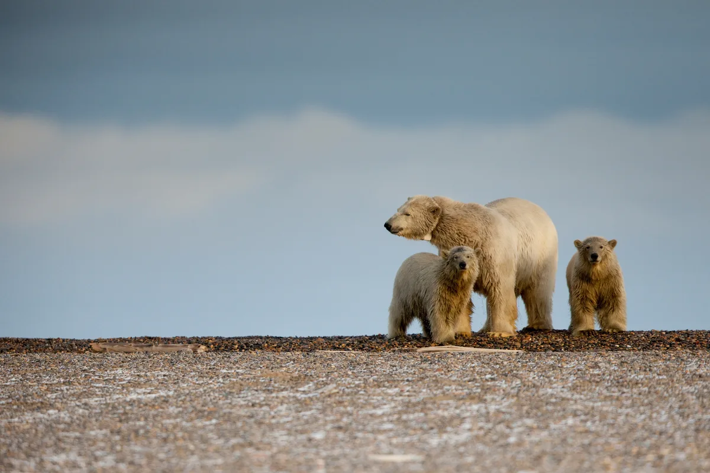
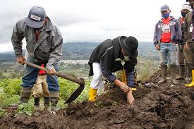

Domingo, 17 de Noviembre de 2024
CONEXION 24/7
Lo último
hace 20 minutos Reforestación Urbana
hace 50 minutos Guayaquil lidera un programa de reciclaje y limpieza urbana
hace 1 hora Ecuador avanza hacia la igualdad de género con nuevas leyes
hace 6 horas El programa de salud mental en Ecuador
hace 10 horas Movimientos juveniles impulsan el reciclaje
Deportes
La Vuelta al Ecuador es otro evento importante dentro del calendario deportivo ecuatoriano, donde los ciclistas nacionales e internacionales se enfrentan en diversas etapas que atraviesan paisajes andinos, costeros y amazónicos. Este evento es una de las principales plataformas para que los ciclistas ecuatorianos muestren su talento y aspiren a mayores logros.
Cultura
El cine ha sido históricamente una de las formas más efectivas de reflejar los problemas sociales y ambientales. En Guayaquil, la industria del cine está experimentando una etapa de consolidación, con festivales locales.
Tecnología
Una de las iniciativas más prometedoras es el uso de drones de reforestación, una tecnología que está permitiendo plantar árboles de manera más rápida y eficiente.l proceso es sencillo pero efectivo: los drones vuelan sobre áreas degradadas, disparando semillas recubiertas de nutrientes en el suelo.
Cambio Climatico
El cambio climático ya no es una amenaza lejana, es una realidad que está afectando a cada rincón del planeta.
Desde el derretimiento de los polos hasta el aumento de fenómenos meteorológicos extremos, los efectos del cambio climático son innegables y cada vez más evidentes.El cambio climático no es un problema aislado, sino una cuestión que interrelaciona la justicia social, la economía y el bienestar del planeta. Abordarlo requiere de un esfuerzo colectivo, un cambio profundo en nuestros modelos de producción y consumo, y un compromiso con las generaciones futuras para preservar el equilibrio de nuestro entorno.
Las temperaturas globales están aumentando a un ritmo alarmante, y con ellas, el nivel del mar, los incendios forestales, las sequías y las tormentas devastadoras.
Miss Universo 2024
Hoy, el mundo entero está listo para ser testigo de una de las noches más esperadas del año: ¡la final de Miss Universo 2024!
Esta noche, las miradas de millones de personas estarán centradas en el escenario donde las mujeres más talentosas, bellas e inspiradoras del planeta se reunirán para representar a sus países y mostrar lo mejor de sí mismas.
Este año, el certamen promete ser más espectacular que nunca, con una producción de primer nivel, presentadores carismáticos yE, por supuesto, una audiencia global que acompañará a las finalistas mientras luchan por alcanzar el codiciado título de Miss Universo 2024.
Proyecto de Reforestación: "Trillion Trees"
El proyecto "Trillion Trees" es considerado uno de los esfuerzos más importantes para contrarrestar la deforestación masiva que afecta a las selvas tropicales de Asia, África y América Latina
Además, tiene como meta la conservación de bosques existentes, ya que la preservación de los ecosistemas actuales es tan importante como la creación de nuevos bosques.
Según un informe de la ONU, el 30% de la solución al cambio climático podría estar en la restauración de bosques a través de la reforestación.
Agenda Social
El pasado fin de semana, Guayaquil vivió una de las jornadas más verdes de su historia, en colaboración con diversas organizaciones ambientales y grupos de voluntarios.
Editorial
El Poder de la Democracia.En un mundo cada vez más interconectado y cambiante, la política juega un papel fundamental en la construcción de sociedades justas y equitativas. La democracia, aunque imperfecta, sigue siendo la herramienta más poderosa que tenemos para garantizar que todos los ciudadanos tengan voz en la toma de decisiones que afectan sus vidas.
Clima
Si bien las lluvias son un componente importante del clima en Guayaquil, la temperatura y la humedad son los factores más característicos que definen la vida diaria de la ciudad. En los últimos años, las olas de calor han sido un fenómeno más recurrente, especialmente durante los meses de marzo y abril.